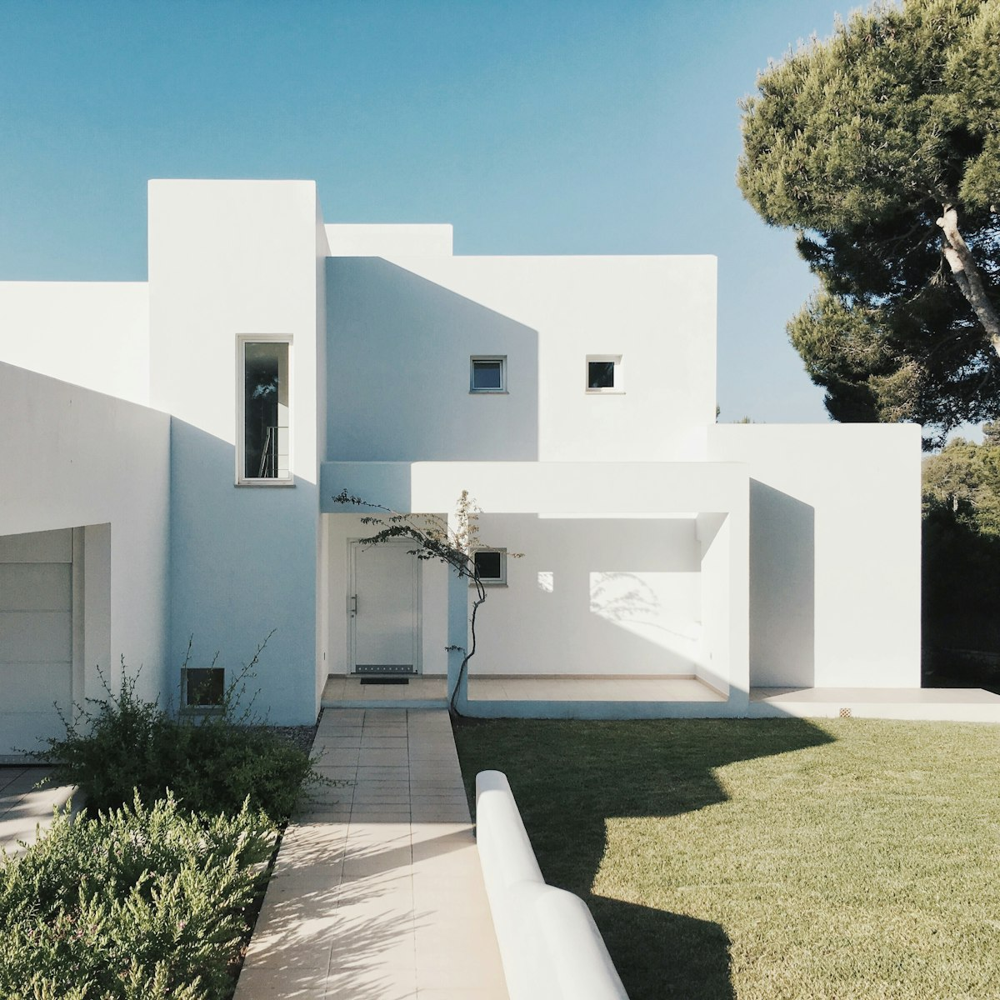
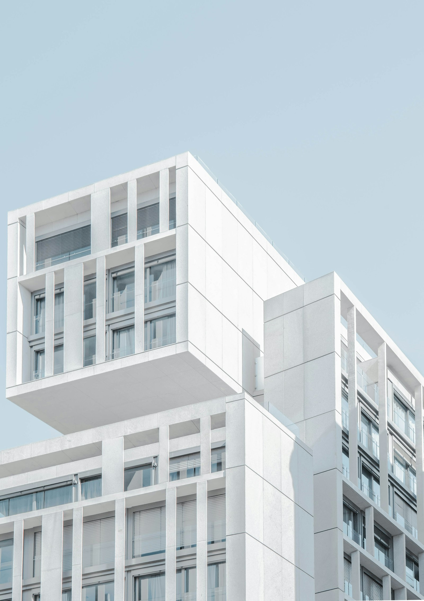
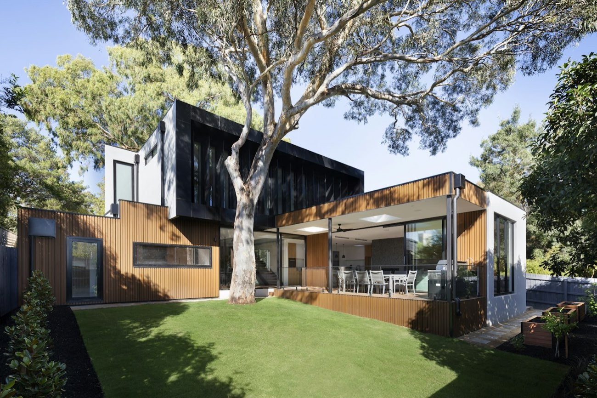
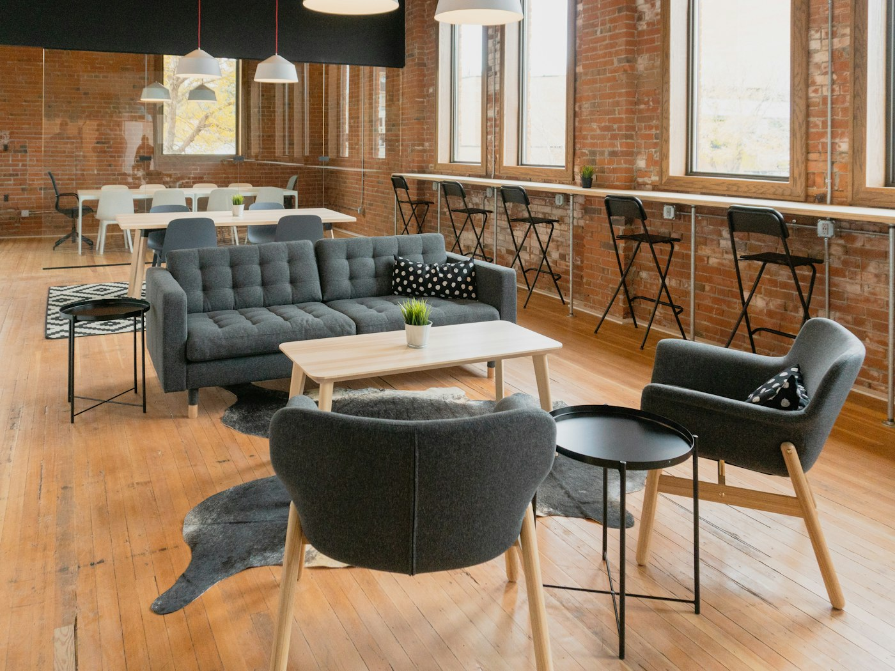
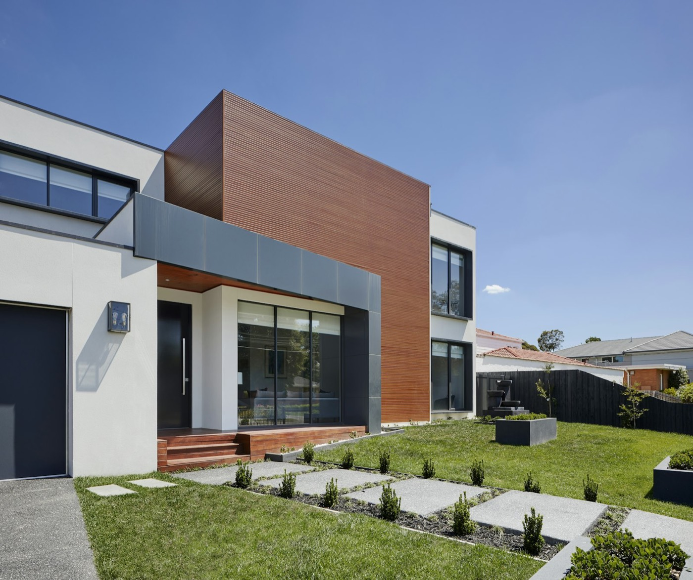
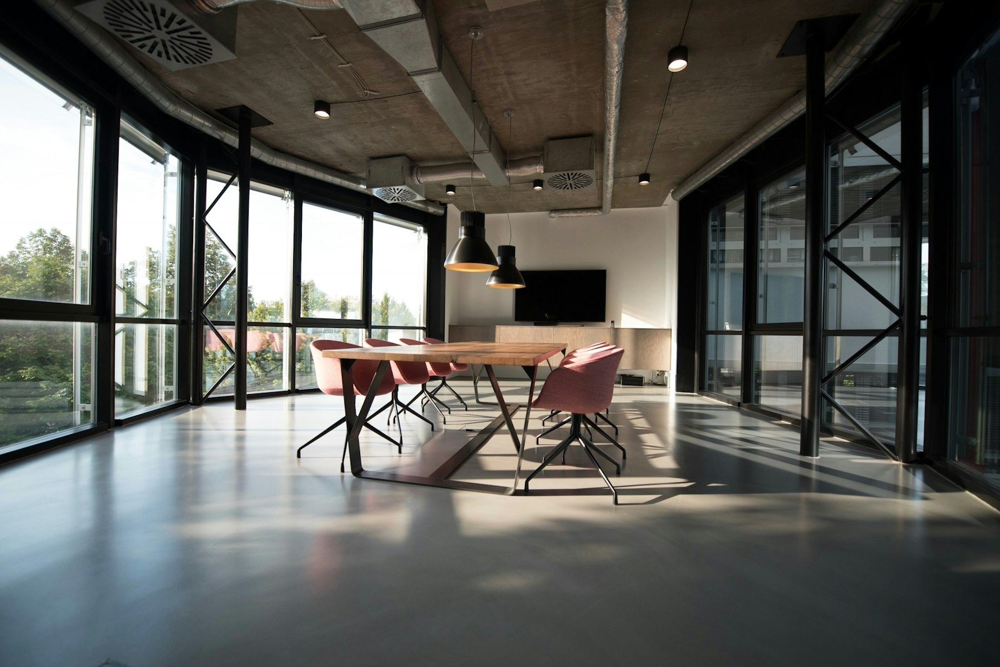
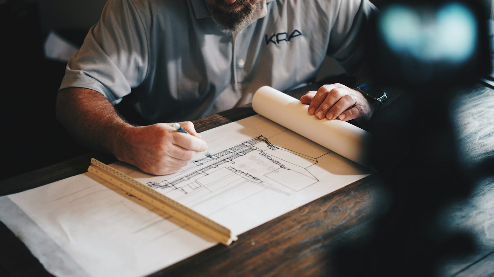

(01)
Space, considered. An architecture and interiors practice working from the everyday outward: where light falls, how a room is entered, what a hand touches.

Six unbuilt studies across homes, civic rooms, workplaces and shopfronts. Each one is a complete case study: brief, drawings, sequence and materials.





All projects shown are unbuilt illustrative studies. Photography is stock imagery used to convey intent. The Reading Room is presented in drawings only.
Every project moves through the same five stages. The same people carry it from the first site visit to the last snagging list.
We meet on site, walk the plot or building with you and record how you live or work today.
A written brief: rooms, areas, priorities, constraints and an initial budget conversation.
Share drawings, title documents and any photographs you have. Tell us what you would not change.
Durations are indicative for a single house and vary with scale, approvals and decisions.
New houses, extensions and whole-house renovations, from site analysis to construction drawings.
Typical scale: 150–600 m²Re-planning existing buildings: walls, joinery, lighting, materials and services coordination.
Typical scale: 80–1,000 m²Shopfronts, cafés and small hospitality projects where the threshold and counter matter most.
Typical scale: 50–300 m²Reading rooms, studios and gathering spaces for schools, trusts and neighbourhood groups.
Typical scale: 100–500 m²Before you buy or commit: what a site or building can hold, what regulations allow, and an order-of-cost.
Typical scale: Any site
We draw from the everyday outward. Before a form is decided we want to know where the morning light lands, how a room is entered and what a hand will touch. Architecture follows from those answers.
FORM / FIELD is a small practice: work is led by the same people from first visit to final snagging. We prefer fewer projects, carefully drawn, and say early when a brief and a budget do not meet.
Three questions run through every project.
Openings and courtyards decide which hours a room is used.
A threshold can separate a workshop, welcome a neighbour or frame a garden.
Quiet materials gain character through proportion, joinery and use.
| Role | Focus | Qualifications |
|---|---|---|
| Principal architect | Design direction, client relationship, site | To be confirmed by the studio |
| Project architect | Technical drawings, approvals, coordination | To be confirmed by the studio |
| Interior architect | Joinery, lighting, materials and finishes | To be confirmed by the studio |
This is a demonstration site. Names, professional registration and qualifications are published only once verified; none are claimed here.
No. All six are unbuilt illustrative studies. Photography is stock imagery chosen to convey the intent of each study.
This demonstration lists Punjab, Islamabad and Sindh. Use the enquiry to describe your site and location.
Typically as a percentage of construction cost or a fixed fee per stage, agreed after the briefing. Nothing on this site is a quotation.
In this demonstration nothing is sent. Your draft stays in this browser, and you can try booking an example consultation slot.
Describe the site and what you have in mind. This demonstration keeps your draft in this browser and sends nothing.